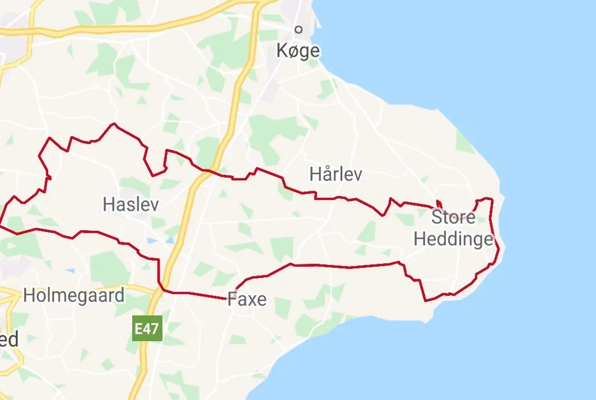

6. etape: Faxe – Faxe – Maxteni har fundet formen

Sejr til sidste års vinder Max ”Maxteni” Nielsen på dramatisk etape, hvor Peugeot-rytter var skyld i en eksplosiv fedtbrand. 
Efter gårsdagens enkeltstarter i både Tour de Danmark og Tour de France, var det i dag i begge løb tid til en lækkerbidsken for sprinterne.
121 km med uret, vestover fra Faxe over Gisselfeld til bakkerne ved Tybjerglille og Sneslev og så østpå til Stevns og frisk Østersøluft, inden det flade indløb på de brede veje retur mod Faxe.
Hos Squadra Molteni lå favoritværdigheden hos Max ”Maxteni” Nielsen og Grane Maaløe, hvor sidstnævnte allerede havde kuppet sig til en udbrudssejr på 4. etape. Det var dog Kristian Blume, der først markerede sig, da feltet nærmede sig Tybjerglille Bakker.

Jeg havde til opgave at rydde bordet for bakkepoints og det lykkedes på begge klassifikerede stigninger. Få points, javel, men det kan få betydning senere, udtalte Kristian.”
Kringlede sogneveje og vind fra alle retninger
Feltet blev dog atter samlet på de kringlede sogneveje over Ørslev, Tureby, Vråby, Arnøje og Sigerslev, før sidevinden ramte på østkysten. Straks fortrak lår og ansigter sig i forpint forcering, og de hurtigt etablerede vifter tordnede forbi Stevns kalkbrud og Stevnsfortet før Rødvig og rygvind indfandt sig.
Pegeout-rytter skyld i brand i skovtursdug
Og så gik det ellers for sig… flere lykkeriddere forsøgte i rygvinden at snyde sprinterne, men feltet tillod ikke nogen at slå det afgørende hul. Tempoet var så højt, at feltet knækkede kort før mål og gårsdagens vinder, Per Sandahl, måtte indkassere en bet på 8 sekunder. Det var dog for intet at regne mod en enkelt Pegeout-rytter, der formåede at overophede et hjulleje i det opskruede tempo og måtte slukke en eksplosiv fedtbrand med en skovtursdug, hastigt tilvejebragt af tililende tilskuere.
Oppe i front kunne ”Maxteni”, der endelig har fundet formen, gøre arbejdet færdigt, med en to og en halv cykellængde foran nærmeste konkurrent.
Forza Max!
Forza Molteni!
6. Etape:
1. Max ”Maxteni” Nielsen, Squadra Molteni
Klassement:
1. Max ”Maxteni” Nielsen, Squadra Molteni
2. Per Sandahl, Squadra Molteni
3. Grane Maaløe, Squadra Molteni
4. Eigil Leegaard, Squadra Molteni
5. Niels Bjørnsteen, Squadra Molteni
6. Jens Langergaard, Squadra Molteni
7. Løjtnant Sørensen, Squadra Molteni
Hold:
1. Squadra Molteni